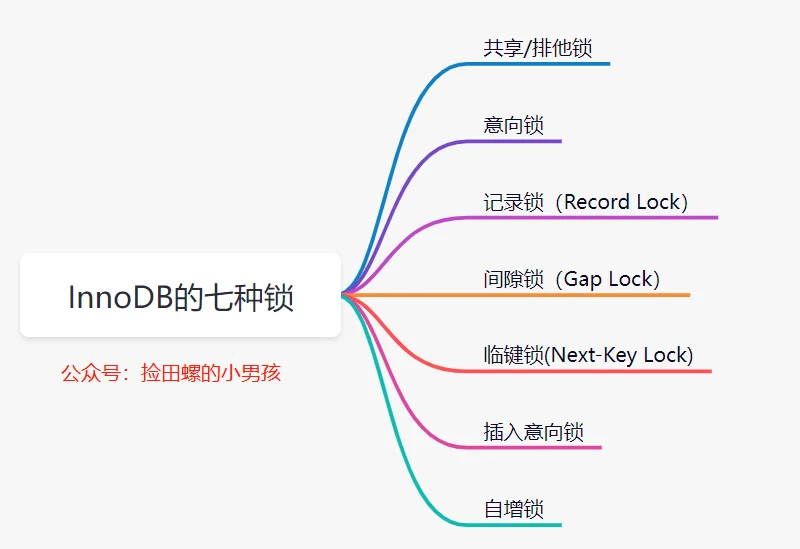
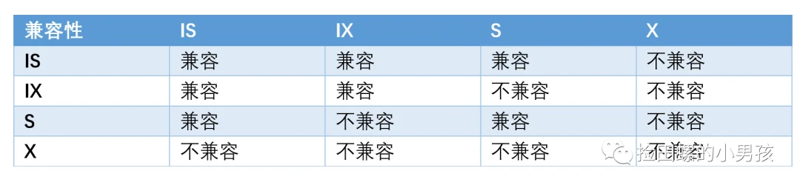
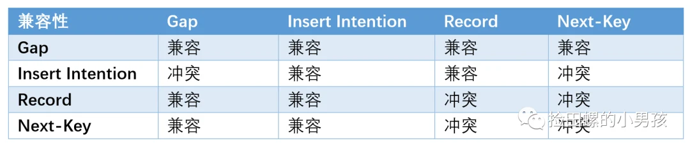
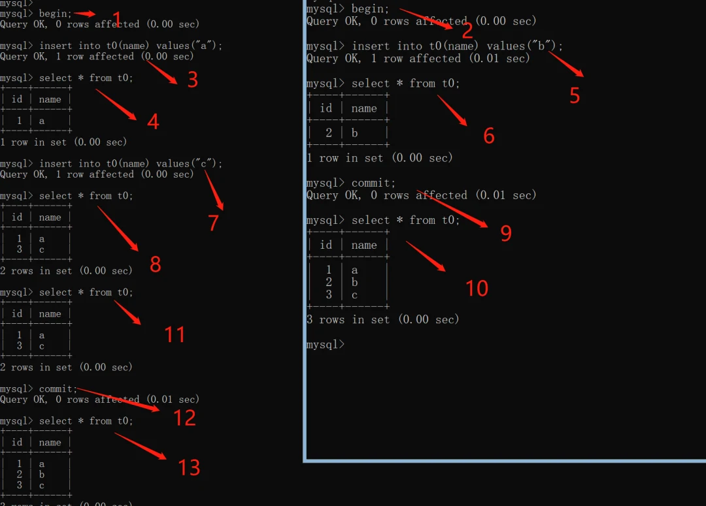
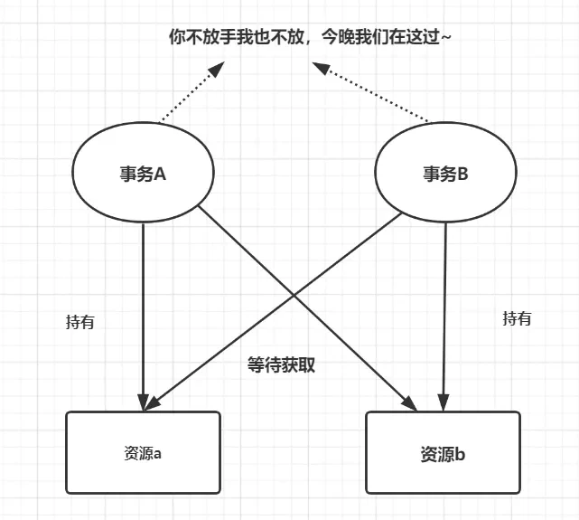
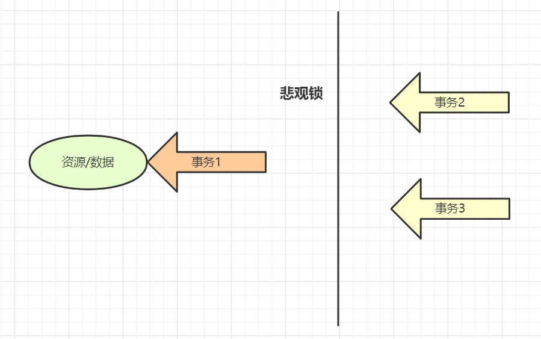
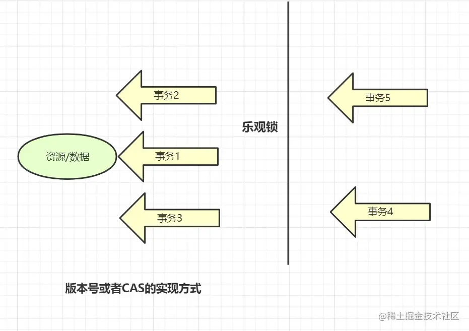

在日常生活中，如果你心情不好想静静，不想被比别人打扰，你就可以把自己关进房间里，并且反锁。这就是生活中的加锁。
同理，对于MySQL数据库来说的话，一般的对象都是一个事务一个事务来说的。所以，如果一个事务内，一个SQL正在更新某条记录，我们肯定不想它被别的事务影响到嘛？因此，数据库设计大叔，给该行数据加上锁(行锁)。
专业一点的说法: 如果有多个并发请求存取数据，在数据就可能会产生多个事务同时操作同一行数据。如果并发操作不加控制，不加锁的话，就可能写入了不正确的数据，或者导致读取了不正确的数据，破坏了数据的一致性。因此需要考虑加锁。

InnoDB呢实现了两种标准的行级锁：共享锁（简称S锁）、排他锁（简称X锁）。
共享锁：简称为S锁，在事务要读取一条记录时，需要先获取该记录的S锁。
排他锁：简称X锁，在事务需要改动一条记录时，需要先获取该记录的X锁。
如果事务T1持有行R的S锁，那么另一个事务T2请求访问这条记录时，会做如下处理：
T2 请求S锁立即被允许，结果T1和T2都持有R行的S锁
T2 请求X锁不能被立即允许,此操作会阻塞
如果T1持有行R的X锁，那么T2请求R的X、S锁都不能被立即允许，T2必须等待T1释放X锁才可以，因为X锁与任何的锁都不兼容。
S锁和X锁的兼容关系如下图表格：
X锁和S锁是对于行记录来说的话，因此可以称它们为行级锁或者行锁。我们认为行锁的粒度就比较细，其实一个事务也可以在表级别下加锁，对应的，我们称之为表锁。给表加的锁，也是可以分为X锁和S锁的哈。
如果一个事务给表已经加了S锁，则：
别的事务可以继续获得该表的S锁，也可以获得该表中某些记录的S锁。
别的事务不可以继续获得该表的X锁，也不可以获得该表中某些记录的X锁。
如果一个事务给表加了X锁，那么
别的事务不可以获得该表的S锁，也不可以获得该表某些记录的S锁。
别的事务不可以获得该表的X锁，也不可以继续获得该表某些记录的X锁。
什么是意向锁呢？意向锁是一种不与行级锁冲突的表级锁。未来的某个时刻，事务可能要加共享或者排它锁时，先提前声明一个意向。注意一下，意向锁，是一个表级别的锁哈。
为什么需要意向锁呢？ 或者换个通俗的说法，为什么要加共享锁或排他锁时的时候，需要提前声明个意向锁呢呢？
因为InnoDB是支持表锁和行锁共存的，如果一个事务A获取到某一行的排他锁，并未提交，这时候事务B请求获取同一个表的表共享锁。因为共享锁和排他锁是互斥的，因此事务B想对这个表加共享锁时，需要保证没有其他事务持有这个表的表排他锁，同时还要保证没有其他事务持有表中任意一行的排他锁。
然后问题来了，你要保证没有其他事务持有表中任意一行的排他锁的话，去遍历每一行？这样显然是一个效率很差的做法。为了解决这个问题，InnoDb的设计大叔提出了意向锁。
意向锁是如何解决这个问题的呢？ 我们来看下
意向锁分为两类：
意向共享锁：简称IS锁，当事务准备在某些记录上加S锁时，需要现在表级别加一个IS锁。
意向排他锁：简称IX锁，当事务准备在某条记录上加上X锁时，需要现在表级别加一个IX锁。
比如：
select ... lock in share mode，要给表设置IS锁;
select ... for update，要给表设置IX锁;
意向锁又是如何解决这个效率低的问题呢：
如果一个事务A获取到某一行的排他锁，并未提交,这时候表上就有
意向排他锁和这一行的排他锁。这时候事务B想要获取这个表的共享锁，此时因为检测到事务A持有了表的意向排他锁，因此事务A必然持有某些行的排他锁，也就是说事务B对表的加锁请求需要阻塞等待，不再需要去检测表的每一行数据是否存在排他锁啦。
意向锁仅仅表明意向的锁，意向锁之间不会互斥，是可以并行的，整体兼容性如下：

记录锁是最简单的行锁，仅仅锁住一行。如：SELECT c1 FROM t WHERE c1 = 10 FOR UPDATE，如果C1字段是主键或者是唯一索引的话，这个SQL会加一个记录锁（Record Lock）
记录锁永远都是加在索引上的，即使一个表没有索引，InnoDB也会隐式的创建一个索引，并使用这个索引实施记录锁。它会阻塞其他事务对这行记录的插入、更新、删除。
一般我们看死锁日志时，都是找关键词，比如lock_mode X locks rec but not gap），就表示一个X型的记录锁。记录锁的关键词就是rec but not gap。以下就是一个记录锁的日志：
RECORD LOCKS space id 58 page no 3 n bits 72 index `PRIMARY` of table `test`.`t` trx id 10078 lock_mode X locks rec but not gap Record lock, heap no 2 PHYSICAL RECORD: n_fields 3; compact format; info bits 0 0: len 4; hex 8000000a; asc ;; 1: len 6; hex 00000000274f; asc 'O;; 2: len 7; hex b60000019d0110; asc ;;
为了解决幻读问题，InnoDB引入了间隙锁(Gap Lock)。间隙锁是一种加在两个索引之间的锁，或者加在第一个索引之前，或最后一个索引之后的间隙。它锁住的是一个区间，而不仅仅是这个区间中的每一条数据。
比如lock_mode X locks gap before rec表示X型gap锁。以下就是一个间隙锁的日志：
RECORD LOCKS space id 177 page no 4 n bits 80 index idx_name of table `test2`.`account` trx id 38049 lock_mode X locks gap before rec Record lock, heap no 6 PHYSICAL RECORD: n_fields 2; compact format; info bits 0 0: len 3; hex 576569; asc Wei;; 1: len 4; hex 80000002; asc ;;
Next-key锁是记录锁和间隙锁的组合，它指的是加在某条记录以及这条记录前面间隙上的锁。说得更具体一点就是:临键锁会封锁索引记录本身，以及索引记录之前的区间，即它的锁区间是前开后闭，比如(5,10]。
如果一个会话占有了索引记录R的共享/排他锁，其他会话不能立刻在R之前的区间插入新的索引记录。
If one session has a shared or exclusive lock on record R in an index, another session cannot insert a new index record in the gap immediately before R in the index order.
插入意向锁,是插入一行记录操作之前设置的一种间隙锁，这个锁释放了一种插入方式的信号。它解决的问题：多个事务，在同一个索引，同一个范围区间插入记录时，如果插入的位置不冲突，不会阻塞彼此。
假设有索引值4、7，几个不同的事务准备插入5、6，每个锁都在获得插入行的独占锁之前用插入意向锁各自锁住了4、7之间的间隙，但是不阻塞对方因为插入行不冲突。以下就是一个插入意向锁的日志：
RECORD LOCKS space id 31 page no 3 n bits 72 index `PRIMARY` of table `test`.`child` trx id 8731 lock_mode X locks gap before rec insert intention waiting Record lock, heap no 3 PHYSICAL RECORD: n_fields 3; compact format; info bits 0 0: len 4; hex 80000066; asc f;; 1: len 6; hex 000000002215; asc " ;; 2: len 7; hex 9000000172011c; asc r ;;...
锁模式兼容矩阵（横向是已持有锁，纵向是正在请求的锁）：

自增锁是一种特殊的表级别锁。它是专门针对AUTO_INCREMENT类型的列，对于这种列，如果表中新增数据时就会去持有自增锁。简言之，如果一个事务正在往表中插入记录，所有其他事务的插入必须等待，以便第一个事务插入的行，是连续的主键值。
官方文档是这么描述的：
An AUTO-INC lock is a special table-level lock taken by transactions inserting into tables with AUTO_INCREMENT columns. In the simplest case, if one transaction is inserting values into the table, any other transactions must wait to do their own inserts into that table, so that rows inserted by the first transaction receive consecutive primary key values.
假设有表：
mysql> create table t0 (id int NOT NULL AUTO_INCREMENT,name varchar(16),primary key ( id)); mysql> show variables like '%innodb_autoinc_lock_mode%'; +--------------------------+-------+ | Variable_name | Value | +--------------------------+-------+ | innodb_autoinc_lock_mode | 1 | +--------------------------+-------+ 1 row in set, 1 warning (0.01 sec)
设置事务A和B交替执行流程如下：

通过上图我们可以看到，当我们在事务A中进行自增列的插入操作时，另外会话事务B也进行插入操作，这种情况下会发生2个奇怪的现象：
事务A会话中的自增列好像直接增加了2个值。（如上图中步骤7、8）
事务B会话中的自增列直接从2开始增加的。（如上图步骤5、6）
自增锁是一个表级别锁，那为什么会话A事务还没结束，事务B可以执行插入成功呢？不是应该锁表嘛？这是因为在参数innodb_autoinc_lock_mode上，这个参数设置为1的时候，相当于将这种auto_inc lock弱化为了一个更轻量级的互斥自增长机制去实现，官方称之为mutex。
innodb_autoinc_lock_mode还可以设置为0或者2，
0：表示传统锁模式，使用表级AUTO_INC锁。一个事务的INSERT-LIKE语句在语句执行结束后释放AUTO_INC表级锁，而不是在事务结束后释放。
1: 连续锁模式,连续锁模式对于Simple inserts不会使用表级锁，而是使用一个轻量级锁来生成自增值，因为InnoDB可以提前直到插入多少行数据。自增值生成阶段使用轻量级互斥锁来生成所有的值，而不是一直加锁直到插入完成。对于bulk inserts类语句使用AUTO_INC表级锁直到语句完成。
2:交错锁模式,所有的INSERT-LIKE语句都不使用表级锁，而是使用轻量级互斥锁。
INSERT-LIKE:指所有的插入语句，包括：INSERT、REPLACE、INSERT…SELECT、REPLACE…SELECT,LOAD DATA等。
Simple inserts:指在插入前就能确定插入行数的语句，包括：INSERT、REPLACE，不包含INSERT…ON DUPLICATE KEY UPDATE这类语句。
Bulk inserts: 指在插入钱不能确定行数的语句，包括：INSERT … SELECT/REPLACE … SELECT/LOAD DATA。
什么是死锁？
死锁是指两个或多个事务在同一资源上相互占用，并请求锁定对方的资源，从而导致恶性循环的现象。

如何防止死锁？
尽量约定固定的顺序访问表，因为交叉访问更容易造成事务等待回路。
尽量避免大事务，建议拆成多个小事务。因为大事务占用的锁资源越多，越容易出现死锁。
降低数据库隔离级别，比如RR降低为RC，因为RR隔离级别，存在GAP锁，死锁概率大很多。
死锁与索引是密不可分的，合理优化你的索引，死锁概率降低。
如果业务处理不好可以用分布式事务锁或者使用乐观锁
悲观锁：
悲观锁她专一且缺乏安全感了，她的心只属于当前事务，每时每刻都担心着它 心爱的数据可能被别的事务修改，所以一个事务拥有（获得）悲观锁后，其他任何事务都不能对数据进行修改啦，只能等待锁被释放才可以执行。
select…for update就是MySQL悲观锁的应用。

乐观锁：
乐观锁的“乐观情绪”体现在，它认为数据的变动不会太频繁。因此，它允许多个事务同时对数据进行变动。实现方式：乐观锁一般会通过version版本号/时间戳判断记录是否被更改过，一般配合CAS算法实现。

大家可以看下这篇文章哈：图文并茂的带你彻底理解悲观锁与乐观锁
这道面试题，一般需要分两种数据库隔离级别（RR和RC），还需要分查询条件是唯一索引、主键、一般索引、无索引等几种情况分开讨论
在RC隔离级别下
如果查询条件是唯一索引，会加IX意向排他锁（表级别的锁，不影响插入）、两把X排他锁（行锁，分别对应唯一索引，主键索引）
如果查询条件是主键，会加IX意向排他锁（表级别的锁，不影响插入）、一把对应主键的X排他锁（行锁，会锁住主键索引那一行）。
如果查询条件是普通索引，如果查询命中记录，会加IX意向排他锁（表锁）、两把X排他锁（行锁，分别对应普通索引的X锁，对应主键的X锁）;如果没有命中数据库表的记录，只加了一把IX意向排他锁（表锁，不影响插入）
如果查询条件是无索引，会加两把锁，IX意向排他锁（表锁）、一把X排他锁（行锁，对应主键的X锁）。
查询条件是无索引，为什么不锁表呢？MySQL会走聚簇(主键)索引进行全表扫描过滤。每条记录都会加上X锁。但是，为了效率考虑，MySQL在这方面进行了改进，在扫描过程中，若记录不满足过滤条件，会进行解锁操作。同时优化违背了2PL原则。
在RR隔离级别
如果查询条件是唯一索引，命中数据库表记录时，一共会加三把锁：一把IX意向排他锁 （表锁，不影响插入），一把对应主键的X排他锁（行锁），一把对应唯一索引的X排他锁 （行锁）。
如果查询条件是主键，会加IX意向排他锁（表级别的锁，不影响插入）、一把对应主键的X排他锁（行锁，会锁住主键索引那一行）。
如果查询条件是普通索引，命中查询记录的话，除了会加X锁（行锁），IX锁（表锁，不影响插入），还会加Gap 锁（间隙锁，会影响插入）。
如果查询条件是无索引，会加一个IX锁（表锁，不影响插入），每一行实际记录行的X锁，还有对应于supremum pseudo-record的虚拟全表行锁。这种场景，通俗点讲，其实就是锁表了。
大家可以看下我之前写的这篇文章哈：聊聊select for update到底加了什么锁
一般可以使用select ... for update来实现数据库的分布式锁。它的优点是：简单，使用方便，不需要引入Redis、zookeeper等中间件。缺点是：不适合高并发的场景，db操作性能较差。
我之前这篇文章，有详细介绍数据库分布式锁的实现，大家可以看看哈：面试必备：聊聊分布式锁的多种实现！
不同的存储引擎：
MyISAM存储引擎，它只支持表锁，并发写的时候，性能差。
InnoDB存储引擎，即支持表锁，也支持行锁，默认为行级锁。
BDB 存储引擎，它支持表锁和页锁。
表级锁和行级锁的区别：
表锁：开销小，加锁快；锁定力度大，发生锁冲突概率高，并发度最低;不会出现死锁。
行锁：开销大，加锁慢；会出现死锁；锁定粒度小，发生锁冲突的概率低，并发度高，行级锁能大大减少数据库操作的冲突
页面锁：开销和加锁时间界于表锁和行锁之间；会出现死锁；锁定粒度界于表锁和行锁之间，并发度一般。
一条SQL加锁，可以分9种情况进行：
组合一：id 列是主键，RC 隔离级别
组合二：id 列是二级唯一索引，RC 隔离级别
组合三：id 列是二级非唯一索引，RC 隔离级别
组合四：id 列上没有索引，RC 隔离级别
组合五：id 列是主键，RR 隔离级别
组合六：id 列是二级唯一索引，RR 隔离级别
组合七：id 列是二级非唯一索引，RR 隔离级别
组合八：id 列上没有索引，RR 隔离级别
组合九：Serializable 隔离级别
可以看我这篇文章，第3小节有详细讲到哈：两万字详解！InnoDB 锁专题！
要安全的修改同一行数据，就要保证一个线程在修改时其它线程无法更新这行 记录。其实一般有悲观锁和乐观锁两种思想，
悲观锁思想就是，当前线程要进来修改数据时，别的线程都得拒之门外~ 比如， 可以使用 select…for update ~，
select * from User where name=‘jay’ for update
以上这条 sql 语句会锁定了User表中所有符合检索条件（name=‘jay’）的记 录。本次事务提交之前，别的线程都无法修改这些记录。
还可以使用乐观锁思想：
所谓乐观锁思想，就是有线程过来，先放过去修改，如果看到别的线程没修改过， 就可以修改成功，如果别的线程修改过，就修改失败或者重试。实现方式：乐 观锁一般会使用版本号机制或 CAS 算法实现。可以看一下我这篇文章，主要是思路哈~ CAS 乐观锁解决并发问题的一次实践
当然，回答这个问题的时候呢，你可以提到分布式锁。分布式锁有这三种实现方式：
数据库分布式锁
Redis分布式锁
Zookeeper分布式锁
大家可以看我这篇文章哈：面试必备：聊聊分布式锁的多种实现！
其实，极客时间丁奇的MySQL45讲有讲到，RR隔离级别，是如何加锁的。大家有兴趣可以去订购看下哈，非常不错的课程。
首先MySQL的版本，是5.x 系列 <=5.7.24，8.0 系列 <=8.0.13。加锁规则一共包括：两个原则、两个优化和一个bug。
原则1：加锁的基本单位都是next-key lock。next-key lock（临键锁）是前开后闭区间。
原则2：查找过程中访问到的对象才会加锁。
优化1：索引上的等值查询，给唯一索引加锁的时候，next-key lock退化为行锁（Record lock）。
优化 2：索引上的等值查询，向右遍历时且最后一个值不满足等值条件的时候，next-key lock退化为间隙锁（Gap lock）。
一个 bug：唯一索引上的范围查询会访问到不满足条件的第一个值为止。
大家可以看我这篇文章，第4小节有详细讲到哈：两万字详解！InnoDB 锁专题！
MySQL上的行级锁是通过给索引上的索引项加锁来实现，只有通过索引条件检索数据，InnoDB才使用行级锁，否则，InnoDB将使用表锁。同时，当两条不同行的记录使用了相同的索引键时，也是会发生锁冲突的。
比如这条SQL：
select * from t where id = 666 for update;复制代码 for update
可以根据条件来完成行锁锁定，并且 id 是有索引键的列，如果 id 不是索引键那么InnoDB将实行表锁。
InnoDB行锁的3种算法：
Record Lock：单个索引记录上的锁，
Gap Lock ：间隙锁，锁定一个范围，但不包含记录本身
Next-Key Lock：它等于Gap Lock + Record Lock，锁定一个范围，并且锁定记录本身。
如果查询条件的是唯一索引，或者主键时，Next-Key Lock会降为Record Lock。如果是普通索引，将对下一个键值加上gap lock，其实就是对下一个键值的范围为加锁。gap lock间隙锁，就是为了解决幻读问题而设计出来的。
间隙锁是RR隔离级别的，如果你想关闭间隙锁，你可以修改隔离级别。也可以修改这个数据库参数innodb_locks_unsafe_for_binlog为1.
我排查死锁的一般步骤是酱紫的：
查看死锁日志show engine innodb status;
找出死锁Sql
分析sql加锁情况
模拟死锁案发
分析死锁日志
分析死锁结果
可以看我这两篇文章哈：
引自：